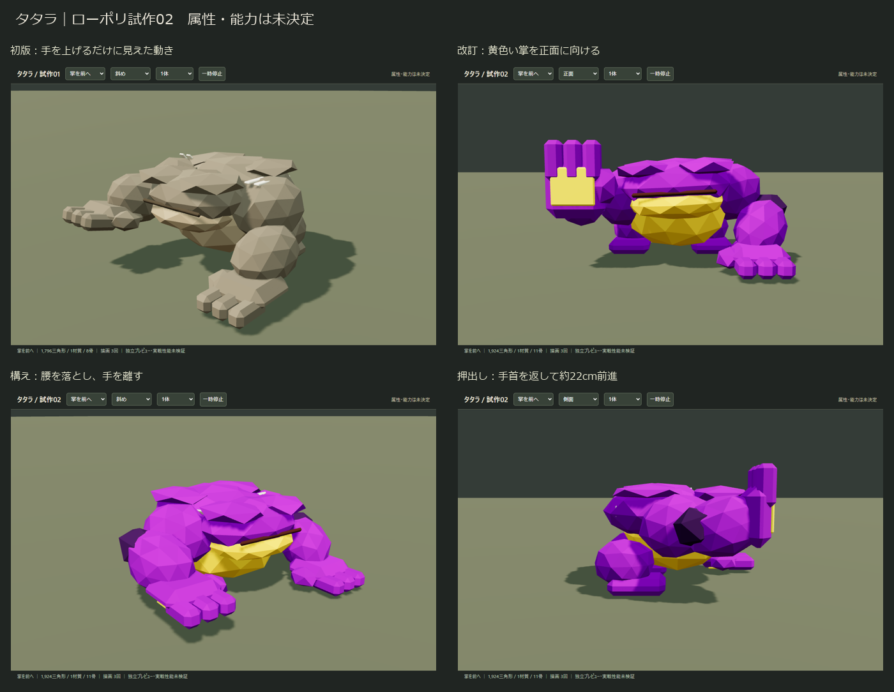
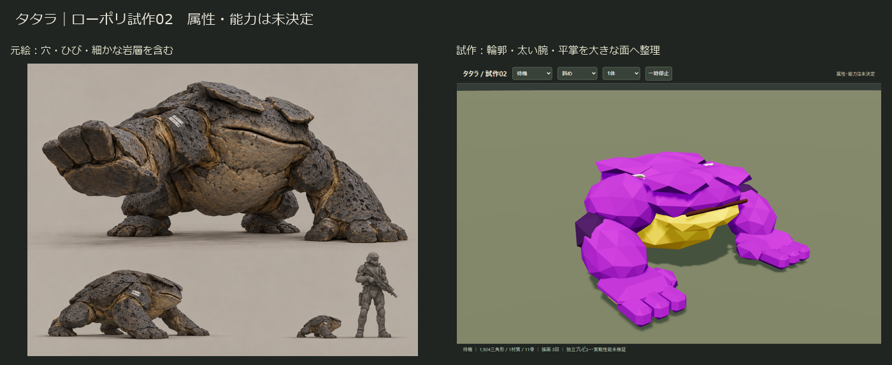
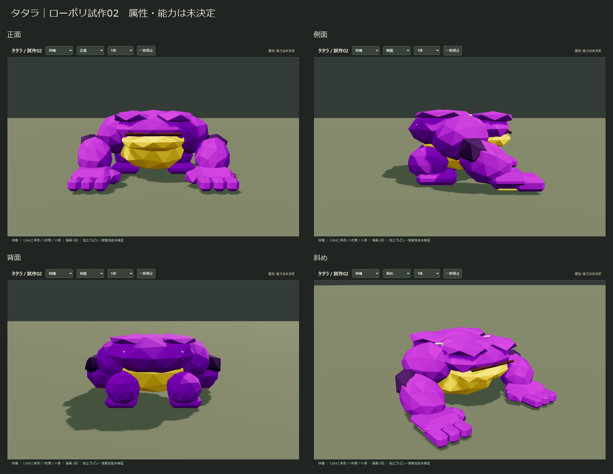
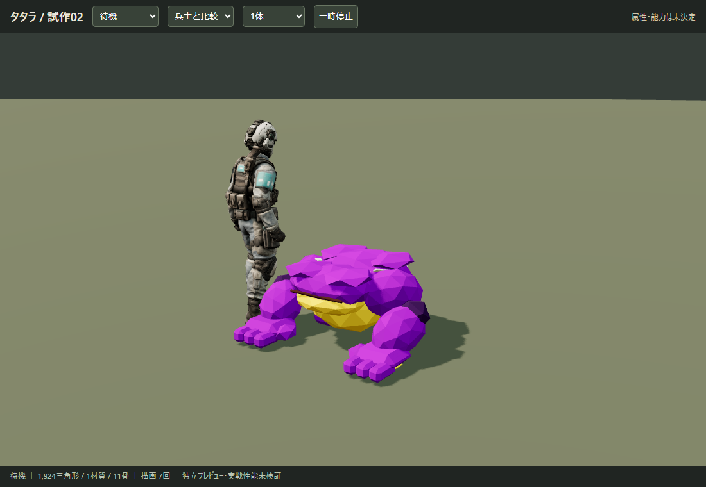
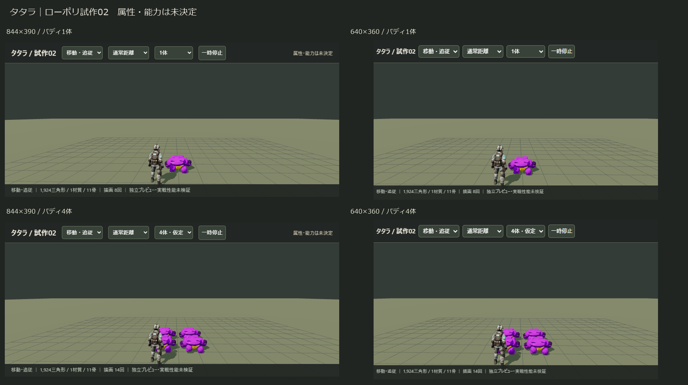

手首を独立させ、下向きの掌を90度返して正面に押し出す改訂版です。紫の岩殻・黄色い腹と掌に変更しました。ローポリ調の採用は未決定。属性・能力は割り当てていません。
1,924三角形／1材質／11骨／テクスチャなし。編集用Blender・ゲーム用GLB・検証と引継ぎ


呼吸と首の動き → 踏み替え・体重移動 → 構え・手首返し・押出し → 左側面。能力のゲーム処理・追従経路は含みません。


製品の画角65度・遮蔽物なしの肩越しカメラに準じた独立シーン。4人各1体を仮定し、比較用に前方へ配置しています。ゲーム内の追従配置や最大数を確定するものではありません。

通常距離では白線の判別は弱く、輪郭が主な手掛かりです。実スマホ、実戦・敵密集・多人数通信・属性エフェクトを含む性能は未検証です。